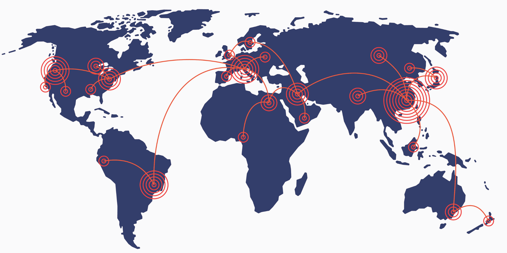

Ketahanan bangsa dalam dunia teknologi informasi merupakan kemampuan suatu negara dalam mengelola, mengembangkan, dan memanfaatkan teknologi informasi untuk kepentingan nasional dan untuk melindungi dari segala bentuk ancamannya.
Latar Belakang
Ketahanan Bangsa adalah kemampuan suatu negara atau bangsa untuk bertahan dan menghadapi berbagai ancaman yang dapat mengancam keberlangsungan hidupnya, baik dari luar maupun dari dalam. Ketahanan bangsa mencakup aspek politik, ekonomi, sosial, hukum, militer, dan keamanan. Aspek politik merupakan salah satu faktor yang sangat penting dalam ketahanan bangsa. Negara yang memiliki sistem politik yang stabil dan demokratis akan lebih mampu menghadapi berbagai ancaman yang datang dari luar maupun dari dalam. Selain itu, keberadaan lembaga-lembaga negara yang terorganisir dengan baik juga merupakan salah satu faktor penting dalam menjamin ketahanan bangsa. Aspek ekonomi juga merupakan faktor yang sangat penting dalam ketahanan bangsa. Negara yang memiliki perekonomian yang stabil dan sejahtera akan lebih mampu menghadapi berbagai ancaman yang datang dari luar maupun dari dalam. Selain itu, keberadaan sumber daya alam yang melimpah serta industri yang berkembang juga merupakan faktor penting dalam menjamin ketahanan bangsa. Aspek sosial juga merupakan faktor yang sangat penting dalam ketahanan bangsa. Negara yang memiliki masyarakat yang sejahtera dan harmonis akan lebih mampu menghadapi berbagai ancaman yang datang dari luar maupun dari dalam. Selain itu, keberadaan lembaga-lembaga sosial yang terorganisir dengan baik juga merupakan faktor penting dalam menjamin ketahanan bangsa. Aspek hukum merupakan faktor yang sangat penting dalam ketahanan bangsa. Negara yang memiliki sistem hukum yang adil dan terorganisir dengan baik akan lebih mampu menghadapi berbagai ancaman yang datang dari luar maupun dari dalam. Selain itu, keberadaan lembaga-lembaga hukum yang terorganisir dengan baik juga merupakan faktor penting dalam menjamin ketahanan bangsa. Aspek militer merupakan faktor yang sangat penting dalam ketahanan bangsa. Negara yang memiliki pasukan militer yang kuat dan terorganisir dengan baik akan lebih mampu menghadapi berbagai ancaman yang datang dari luar maupun dari dalam. Selain itu, keberadaan senjata-senjata yang modern dan memadai juga merupakan faktor penting dalam menjamin ketahanan bangsa. Aspek keamanan juga merupakan faktor yang sangat penting dalam ketahanan bangsa. Negara yang memiliki sistem keamanan yang terorganisir dengan baik akan lebih mampu menghadapi berbagai ancaman yang datang dari luar maupun dari dalam. Selain itu, keberadaan lembaga-lembaga keamanan yang terorganisir dengan baik juga merupakan faktor penting dalam menjamin ketahanan bangsa.
Salah Satu aspek keamanan adalah keamanan teknologi informasi. Keamanan teknologi merupakan salah satu aspek yang sangat penting dalam menjamin ketahanan bangsa. Teknologi informasi memiliki peran yang sangat besar dalam kehidupan sehari-hari, sehingga keamanan teknologi informasi merupakan hal yang sangat penting bagi kelangsungan hidup suatu negara atau bangsa. Keamanan teknologi informasi dapat diartikan sebagai upaya untuk menjaga integritas, konfidensialitas, dan disponibilitas sistem teknologi informasi agar tidak terganggu atau rusak oleh ancaman yang datang dari luar maupun dari dalam. Ancaman tersebut dapat berupa serangan cyber, virus, malware, atau kejahatan teknologi informasi lainnya.
Sejarah
Sejarah keamanan teknologi informasi (TI) dapat ditelusuri kembali ke perang dunia, dimana teknologi komunikasi dan informasi merupakan salah satu faktor penting dalam menentukan kemenangan atau kekalahan suatu negara. Pada saat itu, keamanan TI dianggap sebagai suatu kebutuhan militer yang penting, dan negara-negara mulai mengembangkan sistem keamanan TI yang canggih untuk menjaga informasi rahasia mereka agar tidak terbongkar oleh musuh.
Selain itu, perkembangan teknologi komunikasi yang cepat pada saat itu juga membawa tantangan baru bagi keamanan TI. Misalnya, berbagai negara mulai mengembangkan sistem kriptografi yang canggih untuk menyandikan pesan-pesan rahasia mereka, serta mengembangkan teknik-teknik untuk memecahkan sandi musuh.
Perkembangan
Teknologi informasi merupakan salah satu aspek penting dalam kehidupan sehari-hari kita, terutama dalam era digital saat ini. Namun, dengan semakin berkembangnya teknologi TI, muncul juga tantangan baru terkait dengan keamanan TI.
Untuk menangani tantangan ini, keamanan TI harus terus diperbarui dan ditingkatkan. Pada masa kini, keamanan TI tidak hanya menjadi kebutuhan bagi perusahaan dan pemerintahan, tetapi juga bagi individu dan keluarga.
Salah satu perkembangan terbaru dalam keamanan TI adalah teknologi keamanan cyber. Cybersecurity merupakan suatu sistem yang digunakan untuk melindungi jaringan komputer, sistem informasi, dan data dari serangan cyber dan ancaman keamanan lainnya. Teknologi ini mencakup berbagai macam sistem keamanan, seperti firewalls, antivirus, dan sistem deteksi serangan.
Penerapan
Teknologi informasi merupakan salah satu aspek yang penting dalam memastikan ketahanan bangsa. Keamanan teknologi informasi dapat diterapkan dengan berbagai cara, di antaranya:
Menggunakan kriptografi
Kriptografi dapat digunakan untuk mengamankan data dan informasi yang ditransmisikan melalui jaringan, sehingga hanya orang yang memiliki kunci enkripsi yang dapat membaca informasi tersebut.
Menggunakan autentikasi dan otorisasi
Autentikasi digunakan untuk memverifikasi identitas pengguna, sedangkan otorisasi digunakan untuk memberikan akses kepada pengguna yang telah terautentikasi ke sistem atau aplikasi tertentu.
Menggunakan teknik-teknik keamanan fisik
Teknik-teknik keamanan fisik seperti pengamanan fisik ruangan server, menggunakan sistem pemantauan, dan lain-lain dapat membantu mencegah akses tidak sah ke sistem informasi.
Melakukan latihan dan simulasi keamanan
Latihan dan simulasi keamanan dapat membantu menguji dan mengevaluasi sistem keamanan yang ada, serta membantu mencari tahu kelemahan-kelemahan yang berpotensi di dalam sistem.
Menjaga keamanan jaringan, data dan sistem
Keamanan jaringan, data dan sistem merupakan aspek, aset, dan komponen penting dalam menjaga keamanan teknologi informasi dan harus dilindungi dengan baik.
Ancaman

Ada beberapa ancaman keamanan teknologi informasi yang dapat mengancam ketahanan bangsa, di antaranya adalah:
Serangan cyber
Serangan cyber adalah tindakan yang dilakukan oleh seseorang atau kelompok yang bertujuan untuk mengganggu atau merusak sistem teknologi informasi. Contohnya adalah serangan DDoS (Distributed Denial of Service), phishing, malware, dan lain-lain.
Pencurian informasi
Pencurian informasi adalah tindakan yang dilakukan untuk mencuri informasi yang dianggap rahasia atau bernilai tinggi. Ini bisa terjadi melalui serangan cyber atau dengan cara lain, seperti menyusup ke sistem secara ilegal atau mengambil informasi yang tercantum dalam dokumen yang terlihat di tempat umum.
Interfensi sistem
Interfensi sistem adalah tindakan yang dilakukan untuk mengganggu atau merusak sistem teknologi informasi secara tidak sengaja atau disengaja. Contohnya adalah kegagalan sistem akibat gangguan listrik, kegagalan perangkat keras, atau virus yang menyebar di jaringan.
Kelemahan keamanan
Kelemahan keamanan adalah celah atau bug yang terdapat pada sistem teknologi informasi yang dapat dimanfaatkan oleh pihak yang tidak bertanggung jawab untuk merusak sistem atau mencuri informasi. Kelemahan keamanan bisa terjadi karena kesalahan desain, kurangnya pembaruan, atau penggunaan perangkat lunak yang sudah usang.
Kesimpulan
Ketahanan bangsa dalam dunia teknologi informasi merupakan suatu keadaan di mana sebuah negara dapat menjaga stabilitas, keamanan, dan keselamatan sistem teknologi informasi yang ada di dalam negeri. Ketahanan bangsa dalam dunia teknologi informasi sangat penting, karena sistem teknologi informasi memegang peranan yang cukup strategis dalam kehidupan sehari-hari, termasuk dalam bidang ekonomi, politik, dan keamanan nasional.
Untuk menjaga ketahanan bangsa dalam dunia teknologi informasi, diperlukan tindakan keamanan yang ketat, termasuk pengamanan sistem dan jaringan komputer, pemantauan aktivitas online, dan pencegahan serangan cyber. Selain itu, perlu adanya peningkatan kesadaran akan pentingnya keamanan teknologi informasi di kalangan masyarakat, serta penguatan kapasitas dan kemampuan dalam bidang keamanan teknologi informasi di tingkat nasional.
Dengan demikian, ketahanan bangsa dalam dunia teknologi informasi merupakan suatu hal yang penting untuk diperhatikan oleh pemerintah dan masyarakat, agar dapat menjaga stabilitas, keamanan, dan keselamatan sistem teknologi informasi di dalam dan di luar negeri.